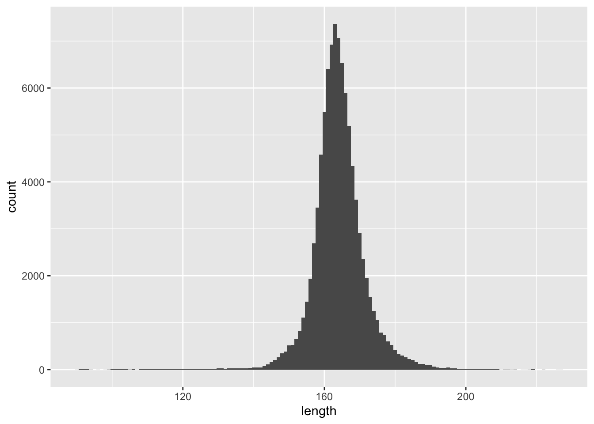
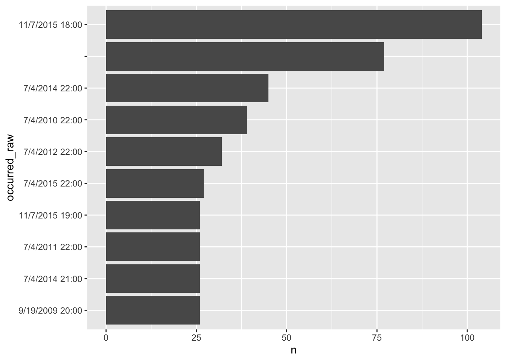
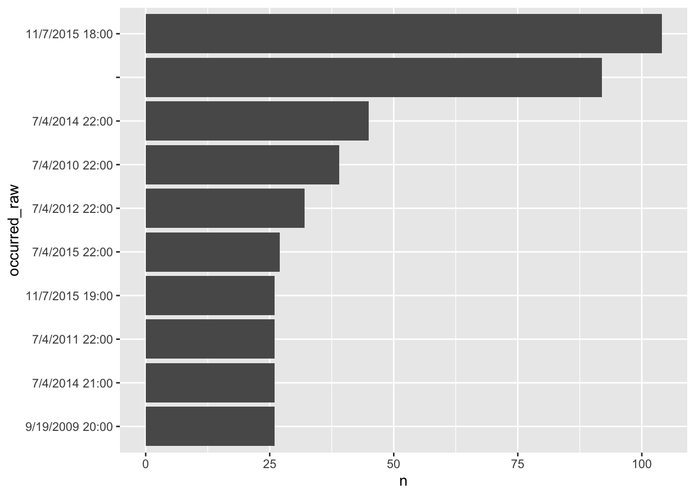
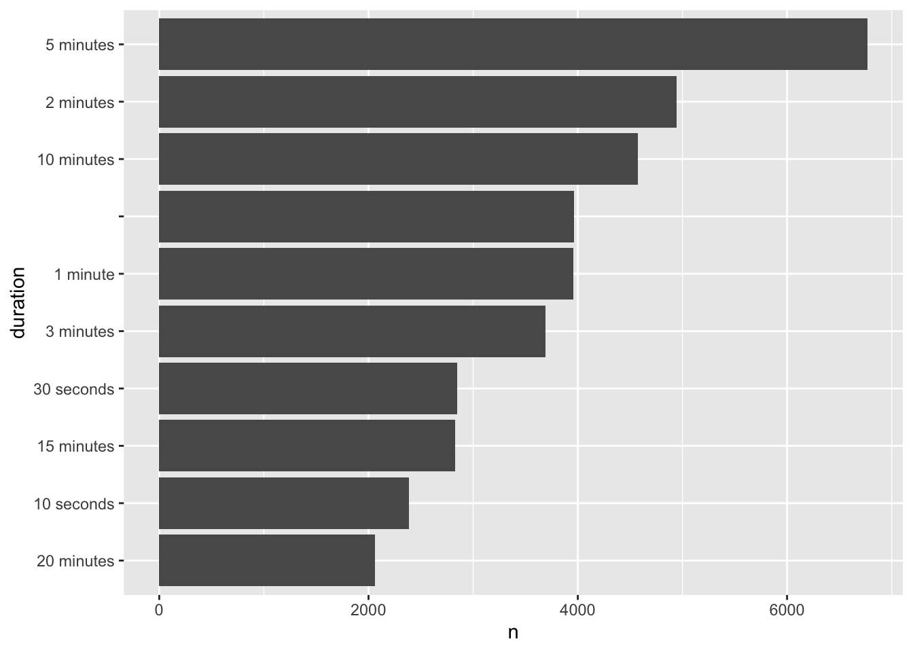
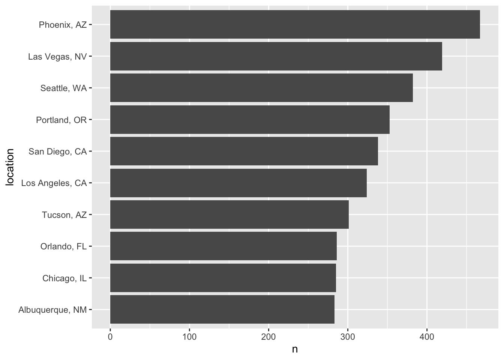

library(DBI)
library(tidyverse)
library(dbplyr)5 Text Analysis
5.1 Why Text Analysis with SQL
I would actually reframe this question as “why store text data in a database?” and offer different reasons from those offered in Tanimura (2021). To structure my answer I will use a representative textual analysis problem (really set of problems) I’ve managed in the past.
Public companies routinely communicate with investors or their representatives through conference calls. Most public companies hold conference calls when they announce their earnings results for a quarter or year. The typical earnings conference call starts with a presentation of results by management, typically the CEO or CEO, followed by the “Q&A” portion of the call during which call participants can ask questions of management Apart from representatives of the company, the typical participant in a conference call is an equity analyst. Equity analysts typically cover a relatively small numbers of companies, typically in a single industry, and provide insights and investment recommendations and related to their covered companies and industries.
Analyst recommendations usually come from valuation analyses that draw on projections of future financial performance. An analyst’s valuation model is usually constructed using a spreadsheet and to some extent an analyst’s questions on a conference call will seek information that can be used for model inputs.
Transcripts of conference calls are collected by a number of data providers, who presumably supply them to various users, including investors and academic researchers. I have used transcripts of conference calls in my own research. The data provider in my case provided a continuous stream of transcripts in XML files. Each call is contained in its own XML file with a file name that indicates the unique identifier of the call. Some elements of the call are contained in structured XML, but the bulk of the data in a call are in a single unstructured XML field.
pg <- dbConnect(RPostgres::Postgres(),
bigint = "integer",
check_interrupts = TRUE)ufo <- tbl(pg, "ufo")
ufo %>%
mutate(length = length(sighting_report)) %>%
ggplot(aes(x = length)) +
geom_histogram(binwidth = 1)
ufo <-
tbl(pg, "ufo") %>%
mutate(id = row_number())
regex <- paste0("Occurred :\\s*(.*)\\s*",
"Reported:\\s*(.* [AP]M).*?\\s*",
"Posted:\\s*(.*)\\s*",
"Location:\\s*(.*)\\s*",
"Shape:\\s*(.*)\\s*",
"Duration:\\s*(.*)\\s*")
regex2 <- paste0("^(.*?)",
"(?:\\s*\\(Entered as :\\s*(.*)\\))?\\s*$")
ufo_extracted <-
ufo %>%
mutate(matches = regexp_matches(sighting_report, regex)) %>%
mutate(occurred_plus = matches[[1]],
reported = matches[[2]],
posted = matches[[3]],
location = matches[[4]],
shape = matches[[5]],
duration = matches[[6]]) %>%
select(id, occurred_plus:duration) %>%
mutate(occurred_plus = regexp_matches(occurred_plus, regex2)) %>%
mutate(occurred_raw = occurred_plus[[1]],
entered = occurred_plus[[2]]) %>%
select(-occurred_plus) %>%
mutate(location_clean = regexp_replace(location,
"(outside of|close to)", "near")) %>%
mutate(occurred = case_when(occurred_raw == '' ~ NA,
length(occurred_raw) < 8 ~ NA,
TRUE ~ as.POSIXct(occurred_raw)),
reported = case_when(reported == '' ~ NA,
length(reported) < 8 ~ NA,
TRUE ~ as.POSIXct(reported)),
posted = if_else(posted == '', NA, as.Date(posted)),
shape = initcap(shape)) %>%
collect()ufo_extracted %>%
ggplot(aes(y = fct_rev(fct_infreq(shape)))) +
geom_bar() +
ylab("Shape")
ufo_extracted %>%
filter(!is.na(occurred_raw)) %>%
count(occurred_raw) %>%
arrange(desc(n)) %>%
slice_head(n = 10) %>%
mutate(occurred_raw = fct_rev(fct_inorder(as.character(occurred_raw)))) %>%
ggplot(aes(y = occurred_raw, x = n)) +
geom_bar(stat = "identity")
ufo_extracted %>%
count(duration) %>%
arrange(desc(n)) %>%
slice_head(n = 10) %>%
mutate(duration = fct_rev(fct_inorder(duration))) %>%
ggplot(aes(y = duration, x = n)) +
geom_bar(stat = "identity")
ufo_extracted %>%
count(location) %>%
arrange(desc(n)) %>%
slice_head(n = 10) %>%
mutate(location = fct_rev(fct_inorder(location))) %>%
ggplot(aes(y = location, x = n)) +
geom_bar(stat = "identity")